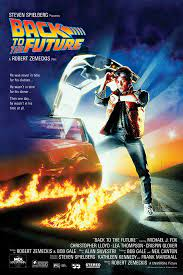
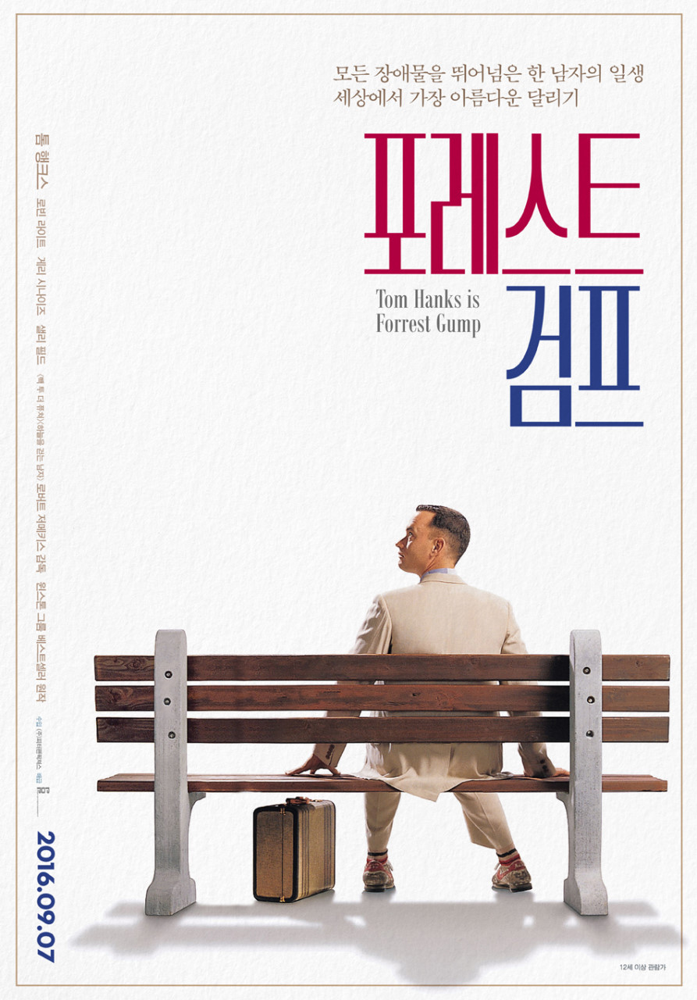
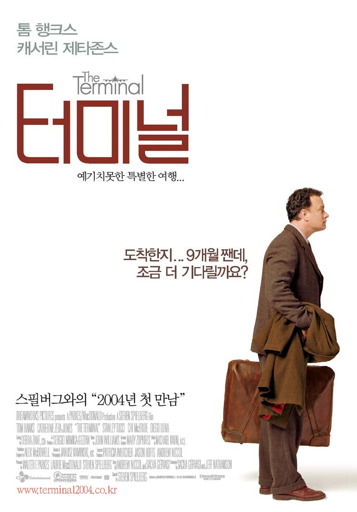

| 순위 | 제목 | 포스터 | 줄거리 | 바로가기 |
|---|---|---|---|---|
| 1 | 빽 투더 퓨처 (1985) |  | 괴짜 발명가 브라운 박사가 타임머신을 만들었다. 평범한 학생 마티 맥플라이는 갑작스러운 사건에 휘말리게 되어 30년 전 과거로 돌아가는데 ... | 클릭 |
| 2 | 노트북(2004) | 놀이공원에서 앨리를 우연히 만난 노아, 부모님의 반대로 사랑을 이루지는 못하지만 우연한 계기로 다시 만나게 되는데 ... | 클릭 | |
| 3 | 포레스트 검프 (1994) |  | 불편한 다리의 낮은 지능을 가진 외톨이 소년 포레스트 검프, 그를 향한 쓰라린 사회의 편견 속에서도 순수한 마음을 가지고 살아나가는 그의 눈부신 여정이 시작된다. | 클릭 |
| 4 | 터미널(2004) |  | 큰 꿈을 안고 뉴욕에 온 '크로코지아'의 평범한 남자 나보스키, 고국에서 쿠데타가 일어나 갑작스레 국적이 사라져버렸다. 과연 그는 터미널을 빠져나갈 수 있을까? | 클릭 |
| 5 | 노팅힐 (1999) | 서점을 운영하는 '윌리엄 태커'는 우연히 세계적인 스타 '애나 스콧'을 만난다. 꿈 같은 로맨스 이야기의 끝은 어떻게 될까? | 클릭 |
이름 :
본인 취향 영화
빽 투터 퓨처 노트북